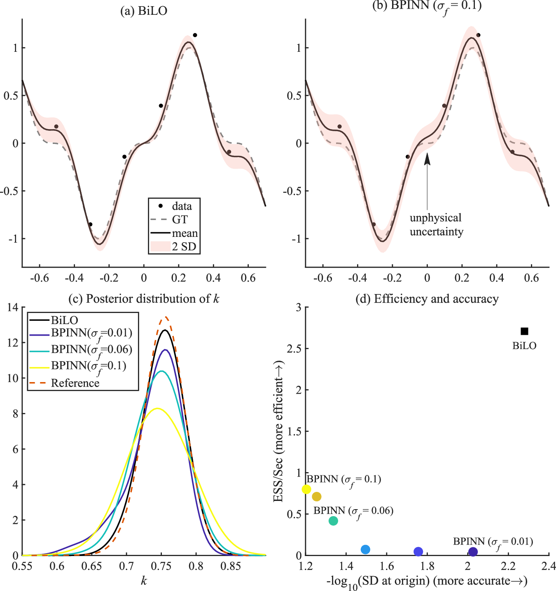
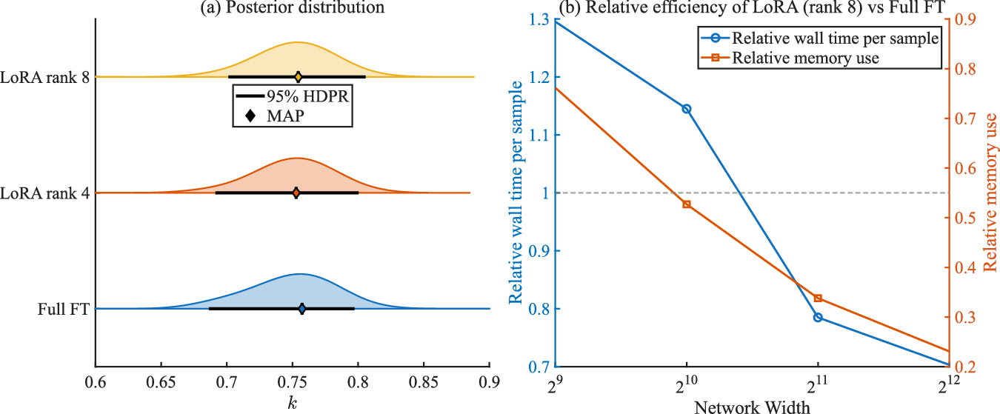
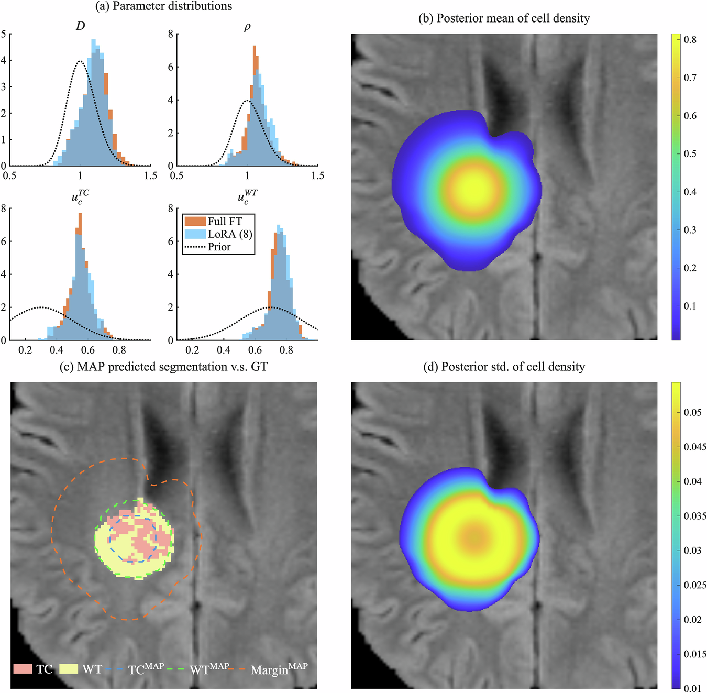
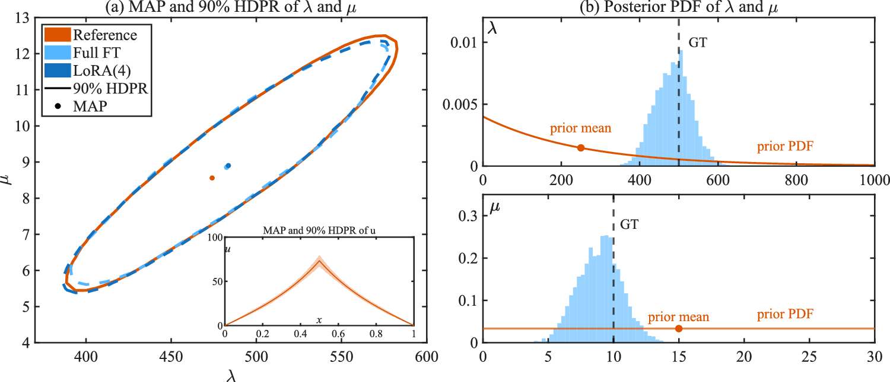
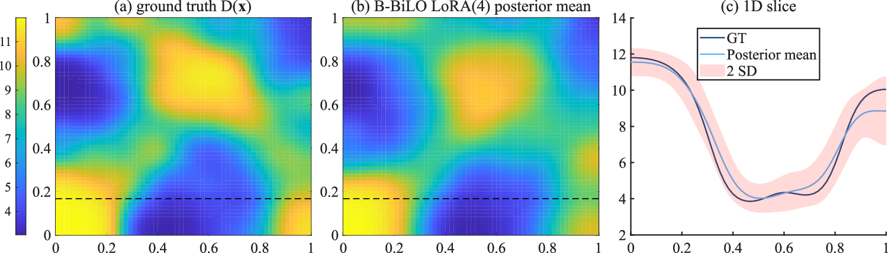

全文精读
低秩适配的贝叶斯双层算子学习
Bayesian bilevel operator learning with low-rank adaptation for efficient uncertainty quantification of PDE inverse problems
解读更新 2026-10-16 15:49 · 依据论文全文整理
全文精读已完成，文章版正在逐步升级。现有内容可继续阅读。
论文提出 B-BiLO，用于偏微分方程（PDE）贝叶斯反问题：上层通过哈密顿蒙特卡洛采样参数后验，下层以低秩适配（LoRA）微调神经网络，近似局部解算子。作者报告，该框架借助局部残差及其参数梯度条件计算势能梯度，并给出近似误差下的后验距离界。所列案例涉及非线性 Poisson 方程、患者 MRI 肿瘤模型、基因表达和 Darcy 流；其适用性仍受 HMC 成本、理论假设及案例范围约束。
研究问题
论文针对 PDE 贝叶斯反演中梯度计算与采样的负担，以及离线代理模型在训练分布外精度可能下降的问题，提出在线局部适配思路。作者指出代理模型“accuracy typically degrades when evaluated outside the distribution of the training dataset”，并以避免采样高维网络权重为设计目标。
方法与路线
方法采用双层结构：上层用 HMC 对物理参数采样，下层针对当前参数微调神经网络局部近似解算子。局部算子损失包含 PDE 残差及其参数梯度相关项，采样阶段以 LoRA 的低秩权重增量减少可训练参数；理论讨论则把下层求解容差纳入近似采样误差分析。
创新与比较
作者的主要方法特点是把局部算子学习、贝叶斯 HMC 与 LoRA 结合，而不是对完整神经网络权重做贝叶斯采样。局部算子要求残差及其参数梯度在固定参数处为零；作者还分析了下层近似误差如何影响后验，并扩展到未知函数推断框架。
证据与发现
案例覆盖非线性 Poisson、MRI 肿瘤生长、基因表达参数和 Darcy 流。作者报告，基因表达案例中 MAP 与 HDPR 面积相对误差低于4%；Darcy 案例后验均值相对参考 L2 误差为6.2%。这些结果支持所示反演任务的可行性，但不能单独证明更广泛场景的有效性。
局限与边界
作者指出 HMC 在高维情况下对步长、轨迹长度和质量矩阵敏感，且每个 leapfrog 步都需下层微调；拒绝轨迹也有额外代价。MRI 患者案例缺少细胞密度直接真值，3D 数据应用留待未来。资料还说明 LoRA 对小网络可能更慢、可能需要更多迭代。
方向关联
该方法将物理方程约束与参数后验不确定性估计结合，可作为智能运维中物理模型参数反演的候选思路。对结构设计或可靠性研究，未知函数推断或可启发空间变异参数建模；但本文所给案例并非结构系统验证，迁移效果和计算成本需另行评估。
后续研究建议
后续可在具体结构或运维问题中，先明确 PDE 模型、观测噪声与参数先验，再比较 B-BiLO 与适当基线的后验精度、运行时间及内存开销；同时检验理论误差界所需的稳定性、Lipschitz 与收缩条件。以上为研究建议，不是作者已报告的结论。
阅读建议
若你关注物理约束下的贝叶斯反演，可重点阅读其局部算子构造、LoRA 与 HMC 的结合，以及误差界所依赖的条件；但不宜把有限案例结果外推为临床或结构系统的普遍验证。
原图未改动。以下图注来自标注的来源，不据此补写摘要未报告的实验结论。
已取得的论文原图

原文图注与出处
Fig. 1 | A schematic for solving the Bayesian PDE inverse problem using BiLO and LoRA. a At the upper level, we sample the PDE parameters θ from the posterior distribution using gradient-based MCMC. b The full operator u(x, θ) (gray surface) and its local approximation u(x, θ1) and u(x, θ2) (blue surface), which satisfies vanishing residual and residual-gradient conditions. The local operator suffices to
Zhang, Ray Zirui et al.
原文图页 · CC BY 4.0

原文图注与出处
a Noisy data, GT solution, mean and SD of inferred u using B-BiLO. b Results using BPINN with σ f = 0.1. c Posterior distribution of the PDE parameter k using B-BiLO and BPINN with different σ f , compared with the reference (Metropolis-Hastings with numerical solver). d Accuracy-efficiency comparison: x-axis shows the -log of the SD at the origin, larger values indicate better physical uncertainty quantification. y-axis shows the effective sample size (ESS) per second of wall time, larger values indicate more efficient sampling. As σ f decreases, BPINN becomes more accurate but less efficient. Overall B-BiLO is more accurate and efficient at uncertainty quantification.
Zhang, Ray Zirui et al.
原文图页 · CC BY 4.0

原文图注与出处
a Comparison of the posterior distribution of k obtained by B-BiLO with LoRA of different ranks and Full FT. Diamond markers denote the MAP estimates, and bars indicate the 95% highest-density posterior region (HDPR). b Relative efficiency of LoRA (rank 8) as ratios with respect to Full FT. The x-axis shows the number of neurons per layer; the left y-axis (blue line) shows the relative average time per sample, and the right y-axis shows the relative maximum memory usage during sampling.
Zhang, Ray Zirui et al.
原文图页 · CC BY 4.0

原文图注与出处
a Posterior distribution of the parameters \(D,\rho,{u}_{c}^{{{{\rm{WT}}}}},{u}_{c}^{{{{\rm{TC}}}}}\) and the prior (dashed), compared with Full FT. b Posterior mean of the tumor cell density u . c Ground truth MRI data with segmented WT and TC regions (filled), the MAP predicted segmentation (contour), and the predicted infiltration margin (where u = 1%). d Posterior standard deviation of the tumor cell density u .
Zhang, Ray Zirui et al.
原文图页 · CC BY 4.0已取得的论文原图


原文图注与出处
a The 90% highest-density posterior region (HDPR) and maximum a posteriori (MAP) estimates of λ and ρ obtained using B-BiLO with LoRA rank 4, Full FT, and the reference method (MH with numerical solver). Inset: 90% HDPR and MAP of the solution u ( x ). b Ground truth (GT), prior, and posterior distributions for λ and μ , with posterior sampled via B-BiLO using LoRA rank 4.
Zhang, Ray Zirui et al.
原文图页 · CC BY 4.0

查看公开摘要
Uncertainty quantification in PDE inverse problems is essential in many applications. Scientific machine learning and AI enable data-driven learning of model components while preserving physical structure, and provide the scalability and adaptability needed for emerging imaging technologies and clinical insights. We develop a Bilevel Local Operator Learning framework for Bayesian inference in PDEs (B-BiLO). At the upper level, we sample parameters from the posterior via Hamiltonian Monte Carlo, while at the lower level we fine-tune a neural network via low-rank adaptation (LoRA) to approximate the solution operator locally. B-BiLO enables efficient gradient-based sampling without synthetic data or adjoint equations and avoids sampling in high-dimensional weight space, as in Bayesian neural networks, by optimizing weights deterministically. We analyze errors from approximate lower-level optimization and establish their impact on posterior accuracy. Numerical experiments across PDE models, including tumor growth, demonstrate that B-BiLO achieves accurate and efficient uncertainty quantification.